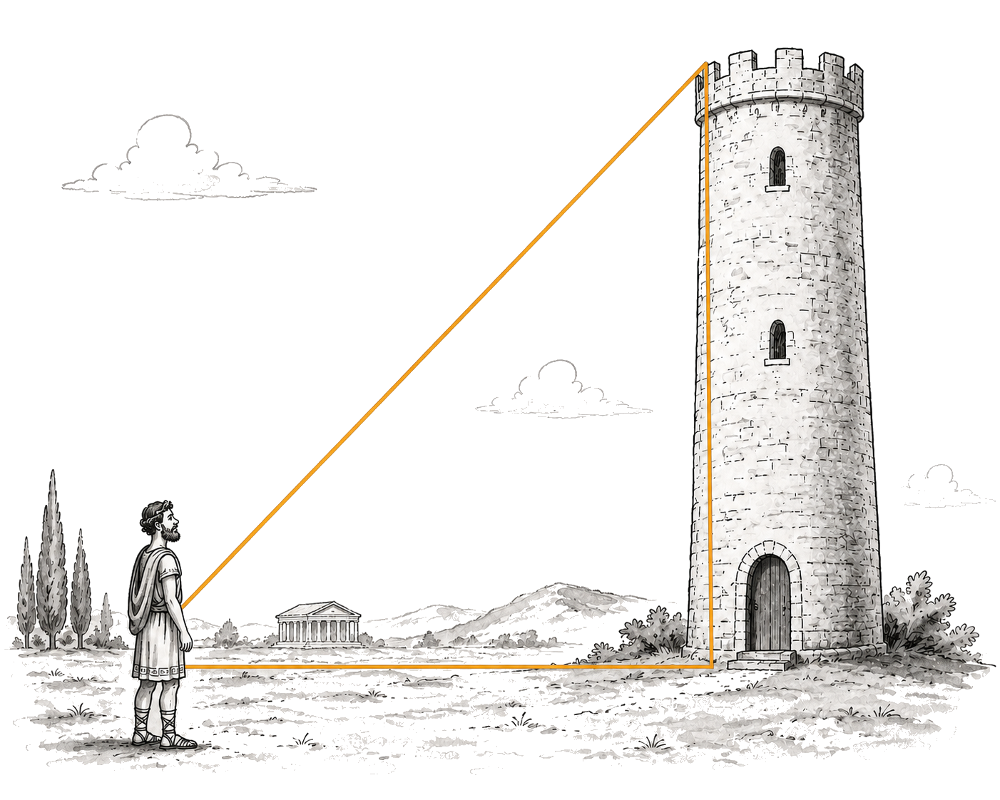

Previously we saw that the lengths of a triangle's sides meant it must have a certain shape.
A triangle with sides 5, 7, and 10 must have angles $27.7^\circ$, $40.5^\circ$, and $111.8^\circ$.
We also saw that angles only determine the necessary ratios between side lengths, not the absolute lengths.
A triangle with angles $27.7^\circ$, $40.5^\circ$, and $111.8^\circ$ could have sides $5, 7, 10$ or $50, 70, 100$ or any proportional scaling of these numbers.
But how do we know what side-length ratios a set of angles corresponds to (or vice versa) in the first place?
A triangle with sides 3, 5, and 7 must have angles $?$, $?$, and $?$.
Historically, geometric methods were used to derive these correspondences case-by-case. The results were then gradually recorded in books called Trigonometric Tables for future use.
Let's go through an example.
Finding Ratios Geometrically
Consider an equilateral triangle with side length $1$.
Because all three sides are equal, all three angles must also be equal. Since the angles in a triangle sum to $180^\circ$, each angle must therefore be $60^\circ$.
(To see proofs for this look up 'supplementary angles' and then 'alternate interior angles'; however, we are just going to take it as a given.)
Now draw a line from the top vertex to the midpoint of the base.
This divides the original triangle into two identical right-angled triangles. Since the original triangle was symmetric:
Each half of the base must have length $\frac{1}{2}$.
The new line meets the base at $90^\circ$.
The top $60^\circ$ angle is split into two $30^\circ$ angles.
Each right-angled triangle in this construction therefore contains the angles: $30^\circ, \ \ 60^\circ, \ \ 90^\circ$.
And has a hypotenuse of $1$ and one leg of $\frac{1}{2}$.
We can find the remaining side using Pythagoras' theorem:
$$\begin{gathered} \left(\frac{1}{2}\right)^2 + x^2 = 1^2 \\ \frac{1}{4} + x^2 = 1 \\ x^2 = \frac{3}{4} \\ x = \frac{\sqrt{3}}{2} \end{gathered}$$
We now have:
We have therefore established our first angle-ratio correspondence:
$$30^\circ, 60^\circ, 90^\circ \longleftrightarrow 1 : \frac{1}{2} : \frac{\sqrt{3}}{2}$$
In other words, we now know that these angles and side ratios belong together.
We have mapped a set of angles to a set of side ratios.
In fact, because we are always dealing with triangles with a $90^\circ$ angle, and the other two angles depend on each other, knowing one of them means we know them all.
So we could also think of this as mapping one angle to a set of side-length ratios.
$$30^\circ \implies 1 : \frac{1}{2} : \frac{\sqrt{3}}{2}$$
$$60^\circ \implies 1 : \frac{1}{2} : \frac{\sqrt{3}}{2}$$
However, it does not immediately tell us what the length of the side opposite or adjacent to each angle is. Of course, we know that the smaller angle must be opposite the smaller side length; however, it would be nice to have this mapped one-to-one.
We could record our information like this:
$$\begin{gathered} 30^\circ \qquad \text{is opposite to the side of length} \qquad \frac{1}{2} \\[0.25em] 30^\circ \qquad \text{is adjacent to the side of length} \qquad \frac{\sqrt{3}}{2} \\[0.25em] 60^\circ \qquad \text{is opposite to the side of length} \qquad \frac{\sqrt{3}}{2} \\[0.25em] 60^\circ \qquad \text{is adjacent to the side of length} \qquad \frac{1}{2} \end{gathered}$$
Let's say we wanted to know the height of some building.

If we measure the angle between it and the ground as $30^\circ$, we could look at our table of information and immediately see that the height must be $\frac{1}{2}$ of the hypotenuse.
We can't measure the hypotenuse directly, and we obviously can't measure the building's height directly (because we are trying to find it using trig!), but we can walk along the ground and measure the distance between the position we took the angle from and the building.
This distance is the absolute length of the adjacent side to our $30^\circ$ angle.
It's 50 meters.
Looking at our table of information we see that this must be $\frac{\sqrt{3}}{2}$ of the hypotenuse, therefore the hypotenuse is 50 times the reciprocal of that.
$$50\cdot\frac{2}{\sqrt{3}}\approx 57.7$$
We know that the height of the building must be half that: $\approx 28.9$.
These ratios were used so frequently, they were given their own names: sine and cosine. We could rewrite the above information as:
$$\begin{gathered} \sin(30^\circ) = \frac{1}{2} \\[0.25em] \cos(30^\circ) = \frac{\sqrt{3}}{2} \\[0.25em] \sin(60^\circ) = \frac{\sqrt{3}}{2} \\[0.25em] \cos(60^\circ) = \frac{1}{2} \end{gathered}$$
While the above example was relatively straightforward to derive geometrically, many other angles were considerably more difficult. Trigonometric tables therefore allowed people to look up these values directly rather than deriving them from scratch each time.